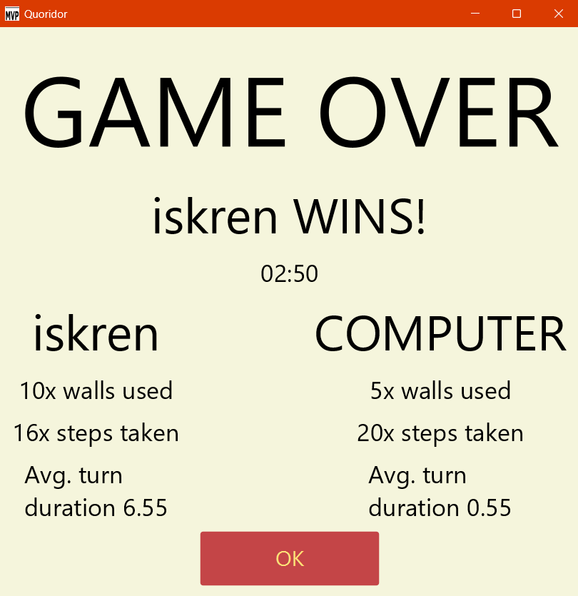
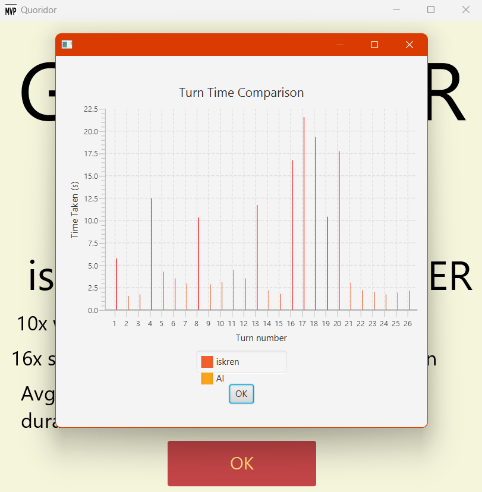

Programming: Game
- Rewiring the model interface for the visuals and fully connecting screens to the model
-
Implemented input validation:
- Walls can't overlap
- Players can't go through walls
- Players can't place more walls than the maximum
- Players can't be fully blocked from winning
- Refined the UI: Displaying time, player name, and number of walls remaining
- Completed the game over screen and graph, displaying outliers in the game statistics
- Implemented saving and loading for game states
- Wrote the javadoc documentation
- Testing and debugging
Example gameplay

Game over screen

Statistics graph after the game over screen